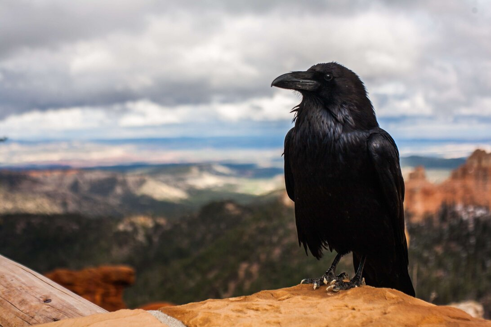

It will be a murder
Learn more about Crows
Crows in the ecosystem
Crows are known for their prominent role in gothic horror and bad luck within
the practice of astrology. The Crow is a bird in the corvid family. They
are characterized by long black feathers and a particularly loud harsh
caw. What do they do for us here in the world? They are a natural part
of the food chain. They also are useful when it comes to helping keep
the world clean, from trash eating to carcasses they keep the
environment clean and moving forward.